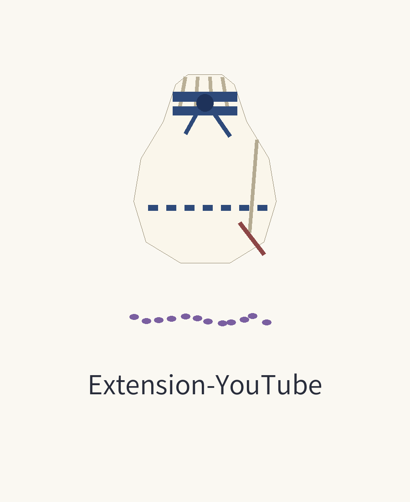
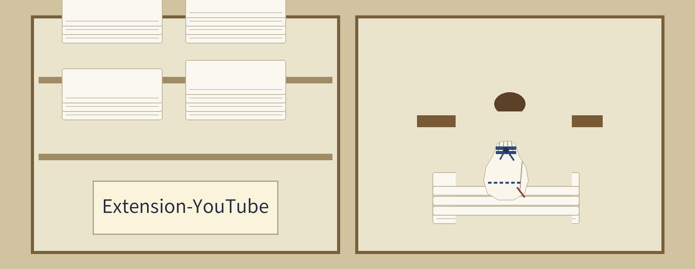
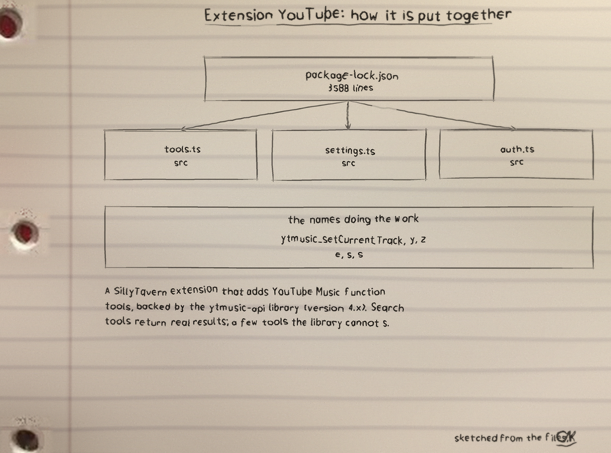
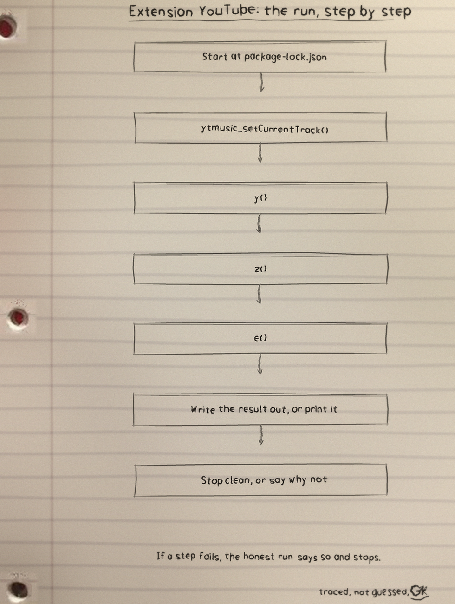
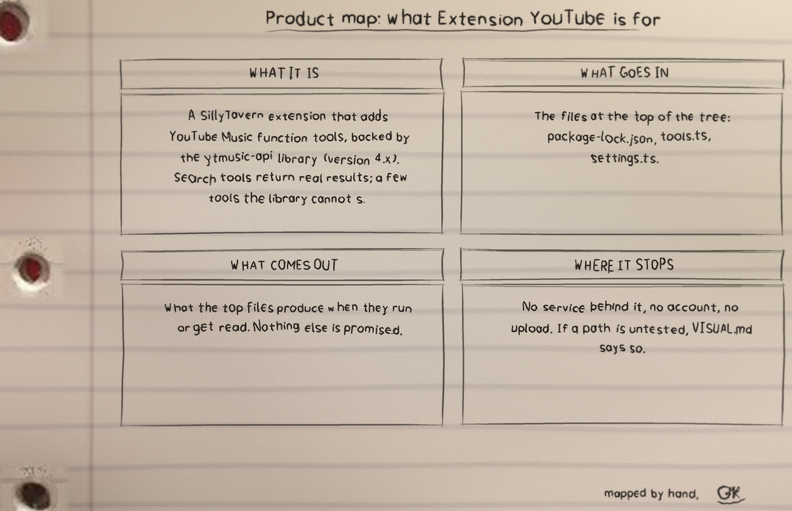

github.com/Epsilon0xCell/Extension-YouTube
A SillyTavern extension that adds YouTube Music function tools, backed by the ytmusic-api library (version 4.x). Search tools return real results; a few tools the library cannot support answer with an explicit limitation message instead of data.
Extension YouTube: what it is, how it runs, where it stops.
Requires the SillyTavern staging branch. Install through the extension installer using the repo URL above, then:
npm install npm run build
Webpack and TypeScript compile src into dist/index.js, the file manifest.json loads.
Authentication is by pasted YouTube Music cookie string. There is no OAuth flow.
Paste into the YouTube Music Cookies field and click . The client initialises first and cookies save only if that succeeds. Success shows [Authenticated]. No account name is shown because the library exposes no account endpoint. The stored expiry is a fixed 30 day estimate from sign in, with a warning when it sits within 3 days.
Each limitation tool answers honestly because ytmusic-api 4.x has no endpoint for it. Each tool can be switched in settings. Search Songs, Play Item, and Get Current Song are on by default, the rest off.
The prompt injection settings hold the {{song}}, {{artist}}, and {{album}} macros, plus role, position, and depth controls. At present nothing is injected, because filling the template needs the most recently played track and the library has neither a now playing nor a history endpoint. The interceptor runs on each generation, clears any stale injection, and logs why.
| File | Lines |
|---|---|
| package-lock.json | 3588 |
| src/tools.ts | 491 |
| src/settings.ts | 185 |
| src/auth.ts | 138 |
| src/settings.html | 108 |
| README.md | 108 |
From package-lock.json, line 1799 on. I did not tidy it for the page.
"node_modules/function-bind": {
"version": "1.1.2",
"resolved": "https://registry.npmjs.org/function-bind/-/function-bind-1.1.2.tgz",
"integrity": "sha512-7XHNxH7qX9xG5mIwxkhumTox/MIRNcOgDrxWsMt2pAr23WHp6MrRlN7FBSFpCpr+oVO0F744iUgR82nJMfG2SA==",
"funding": {
"url": "https://github.com/sponsors/ljharb"
}
},
"node_modules/get-intrinsic": {
"version": "1.3.0",
"resolved": "https://registry.npmjs.org/get-intrinsic/-/get-intrinsic-1.3.0.tgz",
"integrity": "sha512-9fSjSaos/fRIVIp+xSJlE6lfwhES7LNtKaCBIamHsjr2na1BiABJPo0mOjjz8GJDURarmCPGqaiVg5mfjb98CQ==",
"license": "MIT",
"dependencies": {
"call-bind-apply-helpers": "^1.0.2",
"es-define-property": "^1.0.1",
"es-errors": "^1.3.0",
"es-object-atoms": "^1.1.1",
"function-bind": "^1.1.2",
"get-proto": "^1.0.1",
"gopd": "^1.2.0",
"has-symbols": "^1.1.0",What it is. Extension YouTube: 25 files and 5005 counted lines.
The biggest piece. package-lock.json carries the most lines.
The honest gap. No test files yet.
The full set is the Extension-YouTube-Visuals folder.


